Chapter 2 — Regression with Penalization: Subset Selection
EC4308 · Machine Learning and Economic Forecasting
NUS Department of Economics
CHAPTER TWO
Regression with penalization: subset selection
- Module Code: EC4308
- Module title: Machine Learning and Economic Forecasting
- Instructor: Vu Thanh Hai
- Reference: ISLR §6.1
- Acknowledgement: I adapt Dr. Denis Tkachenko’s notes with some minor modifications. Thanks to Denis!
Lecture outline
- Introduction and motivation
- Best subset selection
- Forward stepwise selection
- Backward stepwise selection
- Concluding thoughts: pros and cons.
Introduction and motivation
- The linear regression model you have learned is very commonly used to model — recall this is what we are after in predictive modelling under squared loss.
- Can describe nonlinear but still additive relationships — that is, linear in the coefficients \(\beta\)’s.
- Linearity yields advantages in inference, and in many applications delivers surprisingly good approximations.
Motivation: is OLS good enough?
We typically fit such models with OLS — why do we have to look for alternatives? 2 key concerns:
- Prediction accuracy
- Model interpretability
- OLS has low bias if the true relationship is approximately linear.
- If \(n\) is large relative to \(p\) (the “typical” metrics-textbook setting), OLS also has low variance — no need to do anything.
Motivation: prediction accuracy
- When \(p\) is not much larger than \(n\), OLS predictions have high variance → overfit → poor OOS prediction.
- When \(p > n\) (or \(p \approx n\)), there is no unique solution: OLS variance is infinite — we cannot use this method at all.
- Our goal: get a good linear combination of the predictors to forecast \(Y\) well.
- We want to reduce variance by reducing model complexity at a minor cost in terms of bias — constrain coefficients on some \(\beta\)’s to 0, or shrink them.
Motivation: Interpretability
- Often many \(\beta\)’s entering the regression are irrelevant.
- OLS will almost never set coefficients exactly to 0.
- By removing potentially many such variables (setting their \(\beta\)’s to 0), we enhance model interpretability — sacrifice “small details” to get the “big picture”.
- Caution: “interpretation” here need not mean causal effect! Rather, which variables can be important predictors.
Introduction: Three important approaches
- Subset selection: find a (hopefully small) subset of the \(X\)’s that yields good performance; fit OLS on this subset.
- Shrinkage: fit a model using all \(p\) variables, but shrink coefficients toward 0 relative to OLS (some can go to exactly 0).
- Dimension reduction: attempt to “summarize” the \(p\) predictors with \(m < p\) linear combinations of the variables (e.g., principal components).
We will talk about the first approach today.
Motivation (illustration)
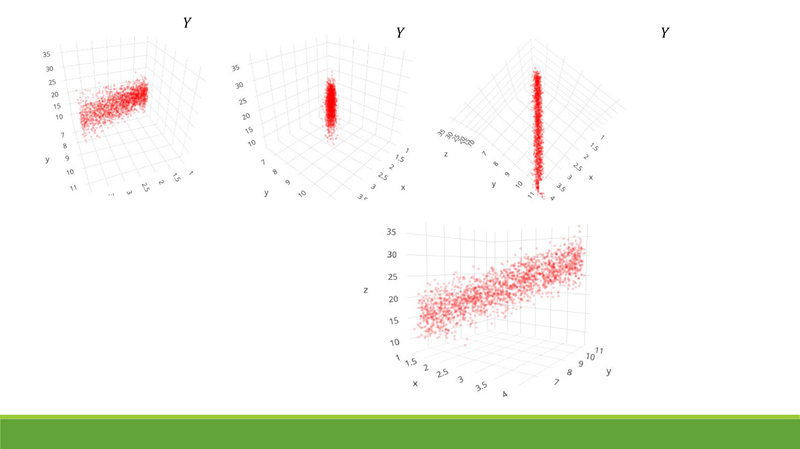
Slide render — motivating illustration
Subset Selection
- We try to find a possibly sparse subset of the \(X\)’s that forecasts well: find the predictors needed for a high-quality forecast.
- Dropping a variable \(=\) setting its coefficient to zero — a form of penalty called the \(L_0\) penalty: \(\|\beta\|_0 = \sum_j \mathbf{1}\{\beta_j \neq 0\}\) (the number of nonzero coefficients).
- Bias/variance tradeoff: leave out a variable highly correlated with the signal → bias; put in too many \(X\)’s → high variance.
- In principle, want to try out all possible combinations and choose the one with the best OOS performance.
The Credit data
Data from the ISLR package on credit card balances and 10 predictors, \(n = 400\):
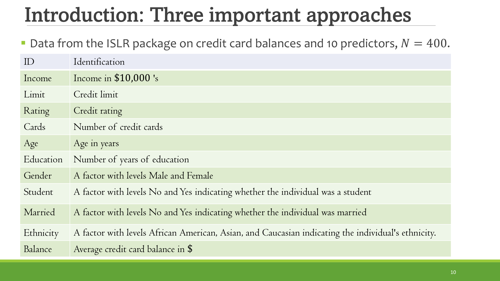
Credit dataset variable table
Best Subset Selection
- Let \(m\) be the maximum model size (\(m \le p\)).
- Goal: for each \(k = 0, 1, \dots, m\), find the subset of size \(k\) that gives the best fit. Then pick the overall best model.
- For each \(k\): fit all models that contain exactly \(k\) predictors — there are \(\binom{p}{k}\) models. If \(k = 0\), the forecast is the unconditional mean.
- Pick the best (e.g., highest \(R^2\)) among these models, and denote it by \(M_k\).
- Optimize over \(k\) using cross-validation (or other criteria like AIC or BIC).
Best subset selection: enumeration (1)
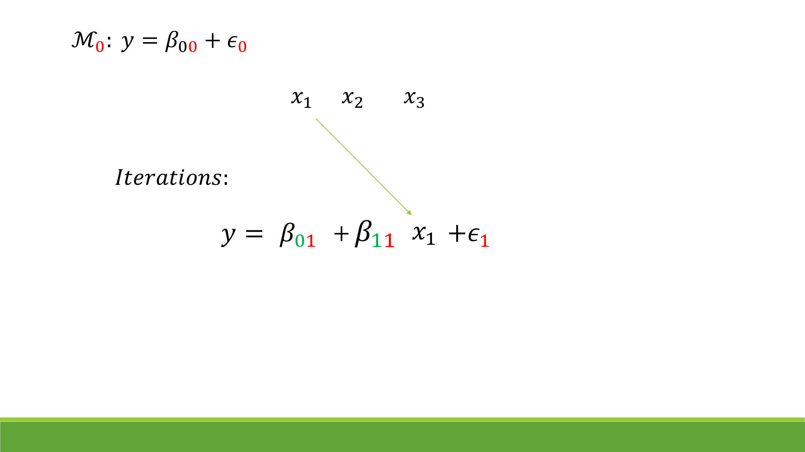
Best subset enumeration — step 1
Best subset selection: enumeration (2)
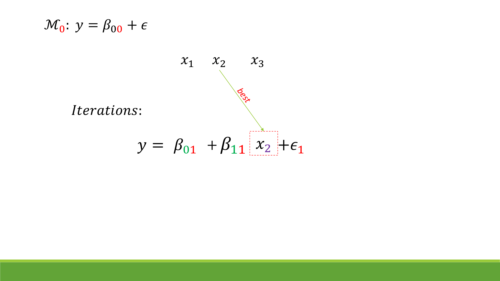
Best subset enumeration — step 2
Best subset selection: enumeration (3)
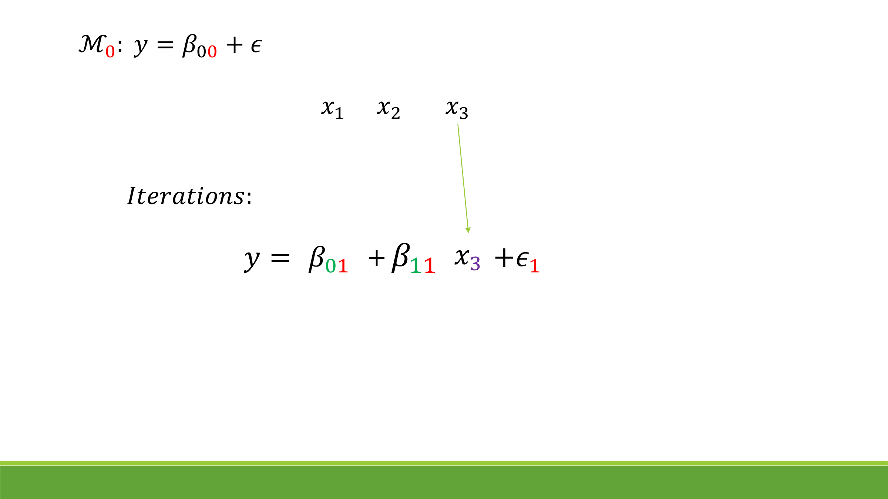
Best subset enumeration
Best subset selection: enumeration (4)
Best subset enumeration
Best subset selection: summary after iteration 1
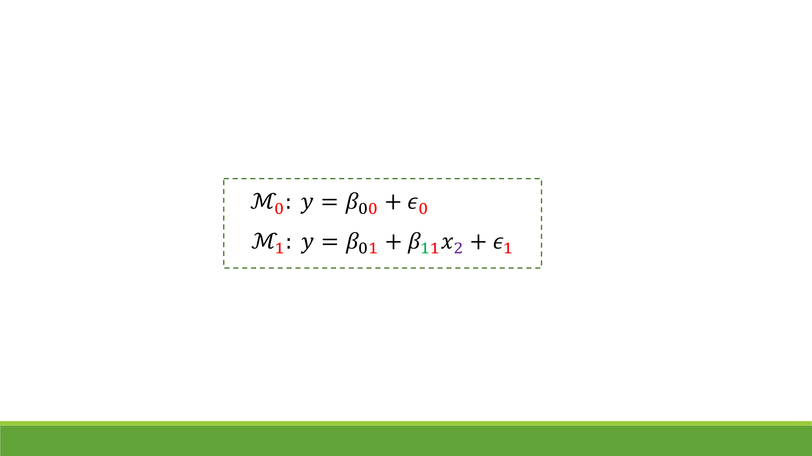
Best subset — \(M_1\) summary
Best subset selection: enumeration (5)
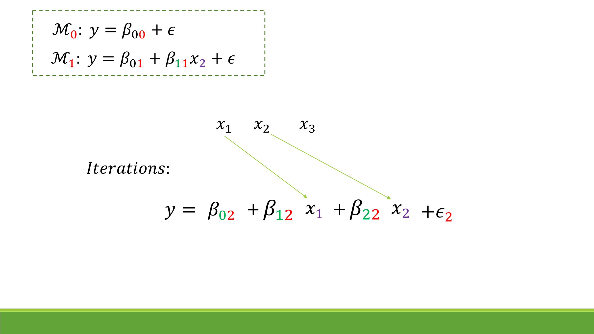
Best subset enumeration
Best subset selection: enumeration (6)
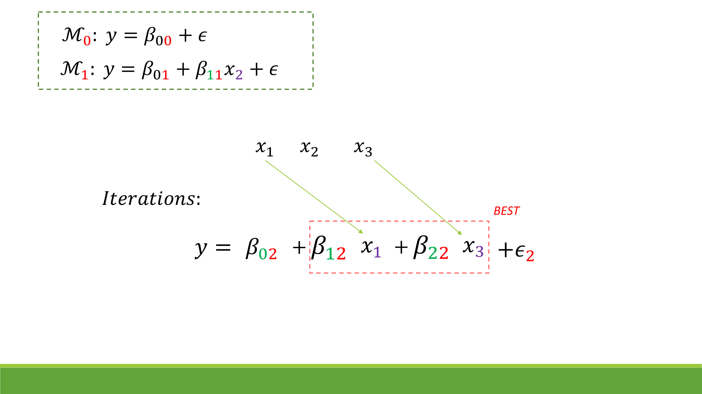
Best subset enumeration
Best subset selection: enumeration (7)
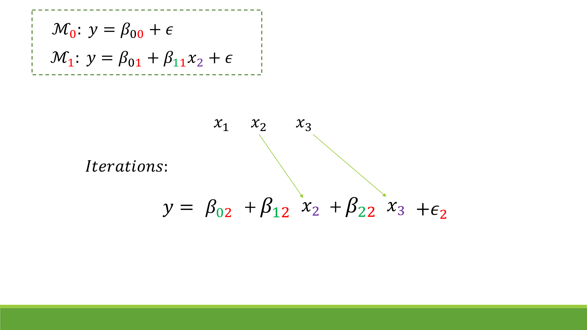
Best subset enumeration
Best subset selection: enumeration (8)

Best subset enumeration
Best subset selection: summary after iteration 2
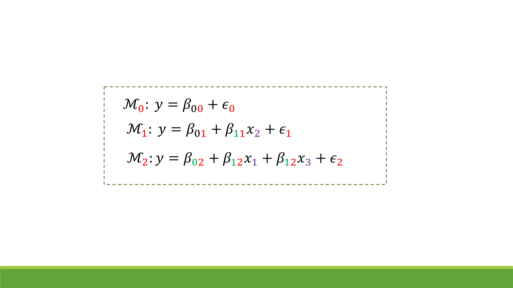
Best subset — \(M_2\) summary
Which one?
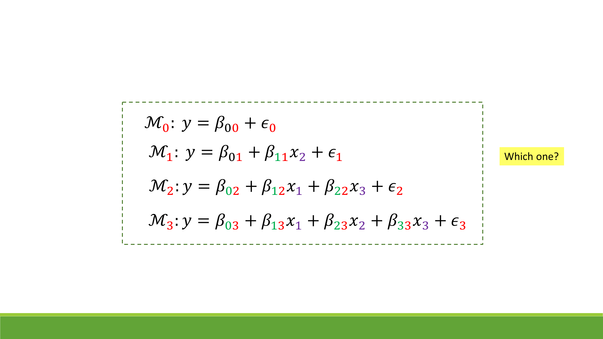
All best models \(M_0, \dots, M_m\) — which overall is best?
Best Subset Selection
- The above direct approach is called all subsets or best subsets regression.
- However, we often can’t examine all possible models — there are \(2^p\) of them; for example, when \(p = 40\) there are over a billion models!
- The prediction is highly unstable: the subsets of variables in \(M_k\) and \(M_{k+1}\) can be very different from each other → high variance (the best subset of size \(k+1\) need not include any of the variables in the best subset of size \(k\) — e.g., \(M_3\) need not include \(M_2\)’s variables).
- If \(p\) is large, the chance of finding models that work great in training data but not OOS increases — overfitting.
- Estimates fluctuate across different samples — and so does the best model choice.
- Nice feature: not confined to OLS — can do, e.g., logit regression, just replace RSS by deviance.
Best Subset Selection
- The more predictors, the lower the in-sample MSE. With large \(k\) we might have too flexible a model; with small \(k\), a rigid model. Both do badly out-of-sample.
- So which \(k\) is best? In other words, out of the best models for every \(k\), which model is the best?
- We need the model with the lowest OOS MSE (‘test error’).
- OR: we can use model-selection criteria (information criteria, adjusted \(R^2\)) to indirectly estimate the OOS MSE. ICs adjust the in-sample MSE to penalize potential overfitting — the more regressors we add, the higher the penalty.
- OR: directly estimate the OOS MSE using the validation set or CV.
Mallows’ Cp and adjusted-\(R^2\): a refresher
- Mallows’ \(C_p\) (C. L. Mallows): \[C_p = \frac{1}{n}\big(RSS + 2k\,\hat{\sigma}^2\big)\] where \(k\) is the total number of parameters used, and \(\hat{\sigma}^2\) is an estimate of the variance of the error \(\varepsilon\) associated with each response measurement.
- For a least-squares model with \(k\) variables, the adjusted \(R^2\) statistic is: \[\bar{R}^2 = 1 - \frac{RSS/(n-k-1)}{TSS/(n-1)}\]
- Maximizing the adjusted \(R^2\) is equivalent to minimizing \(RSS/(n-k-1)\). While RSS always decreases as the number of variables increases, \(\bar{R}^2\) may increase or decrease, due to the presence of \(k\) in the denominator.
AIC: A refresher
- AIC (Akaike Information Criterion) is an asymptotically unbiased estimate of the Kullback-Leibler divergence between the model distribution and the true forecast distribution (if all the assumptions hold).
- The criterion is defined for a large class of models fit by maximum likelihood: \[AIC = -2\ln L + 2k\] where \(L\) is the maximized value of the likelihood function for the estimated model, and \(k\) is the number of parameters.
- In the linear regression model, it equals (up to constants): \[AIC = \frac{1}{N\hat{\sigma}^2}\big(RSS + 2k\hat{\sigma}^2\big)\]
- AIC is used in different model types, not just linear.
BIC: a refresher
- BIC ((Schwarz) Bayesian Information Criterion) decreases with the posterior probability of the model (under a uniform prior over models).
- The criterion is defined for a large class of models fit by maximum likelihood: \[BIC = -2\ln L + \ln(N)\cdot k\] where \(L\) is the maximized value of the likelihood function for the estimated model.
- In the linear regression model, it equals: \[BIC = \frac{1}{N\hat{\sigma}^2}\big(RSS + \ln(N)\,k\,\hat{\sigma}^2\big)\]
Estimating \(\sigma^2\) when applying IC
How do we find \(\hat{\sigma}^2\) to compute AIC and BIC?
- First approach: use \(\hat{\sigma}^2\) directly from each model.
- Second approach: when \(p\) is small relative to \(n\): use the \(\hat{\sigma}^2\) estimated using the full model (all predictors used → low-bias model; suggested in the textbook).
- Third approach: when \(P/N\) is not small, try an iterative procedure:
- Use \(\hat{\sigma}^2_{a0}\) (sample variance of \(Y\)); select the best model on IC, call it \(M_{k0}\); from it we predict \(\hat{Y}\) and get \(\hat{\sigma}^2_{p0}\).
- Set \(\hat{\sigma}^2_{a1} = \hat{\sigma}^2_{p0}\); select the best model on IC, call it \(M_{k1}\); from it we get \(\hat{\sigma}^2_{p1}\).
- Iterate until convergence (often 2 steps are enough).
Best subset selection for ‘Credit’
For each possible model containing a subset of the ten predictors in the Credit data set, the \(C_p\) and \(R^2\) are displayed. The red frontier tracks the best model for a given number of predictors.
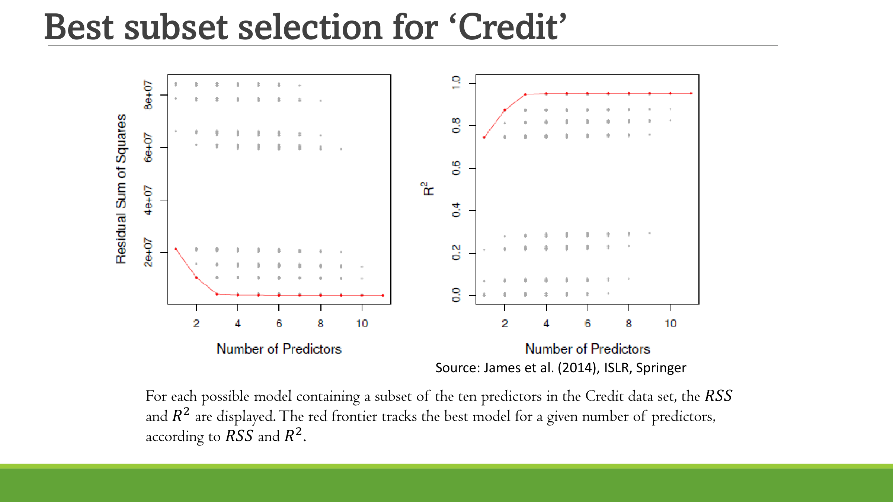
Best subset — \(C_p\) and \(R^2\) frontier (ISLR Fig 6.1)
Source: James et al. (2014), ISLR, Springer.
Best subset selection for ‘Credit’ (p = 8)
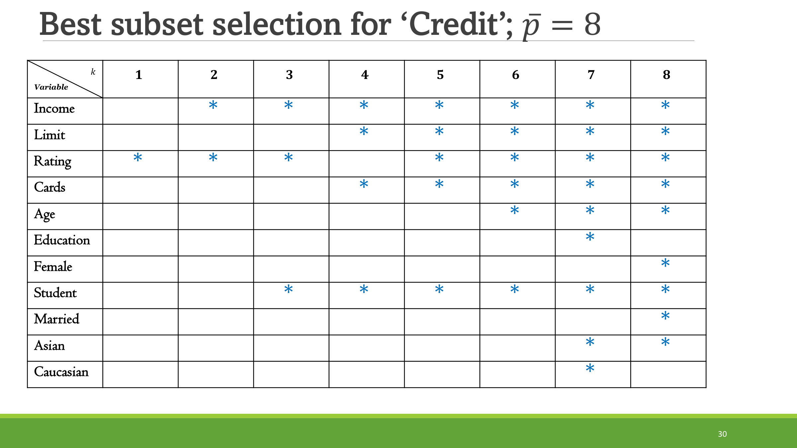
Best subset — coefficient inclusion grid
Best subset selection for ‘Credit’ (p = 8, continued)
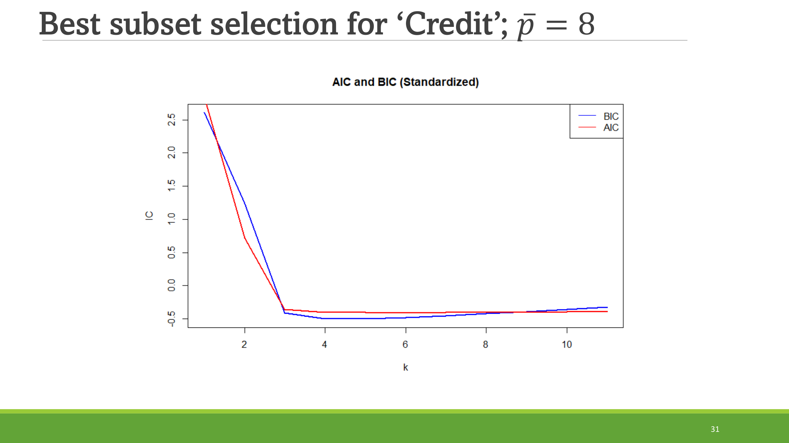
Best subset — results (2)
Best subset selection for ‘Credit’ (p = 8, continued)
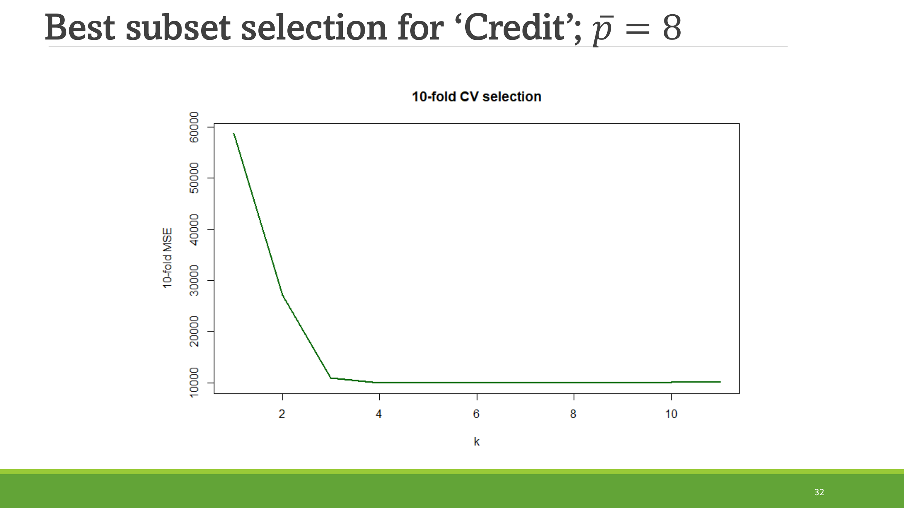
Best subset — results (3)
Best subset optimal model for ‘Credit’
NB: in this example, alternative variance estimation for AIC/BIC does not change the selection.
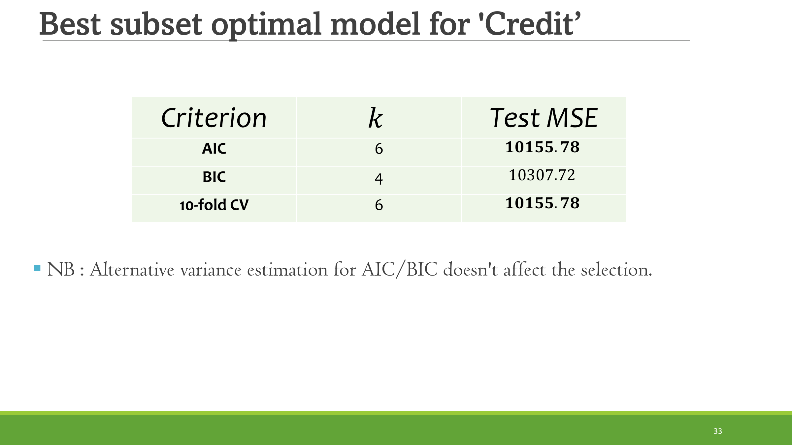
Best subset — optimal model by criterion
Stepwise Selection
For computational reasons, best subset selection cannot be applied with very large \(p\). Why not?
- Best subset selection may also suffer from statistical problems when \(p\) is large: the larger the search space, the higher the chance of finding models that look good on the training data, even though they might not have any predictive power on future data.
- Thus, an enormous search space can lead to overfitting and high variance of the coefficient estimates.
- For both of these reasons, stepwise methods, which explore a far more restricted set of models, are attractive alternatives to best subset selection.
Forward Stepwise Selection: algorithm
- Let \(M_0\) denote the null model, which contains no predictors.
- For \(k = 0, \dots, p-1\):
- Consider all \(p - k\) models that augment the predictors in \(M_k\) with one additional predictor.
- Choose the best among these \(p - k\) models, and call it \(M_{k+1}\). Here “best” is defined as having the smallest RSS or highest \(R^2\).
- Select a single best model from among \(M_0, \dots, M_p\) using cross-validated prediction error, \(C_p\), AIC, BIC, or adjusted \(R^2\).
Forward stepwise selection: enumeration (1)
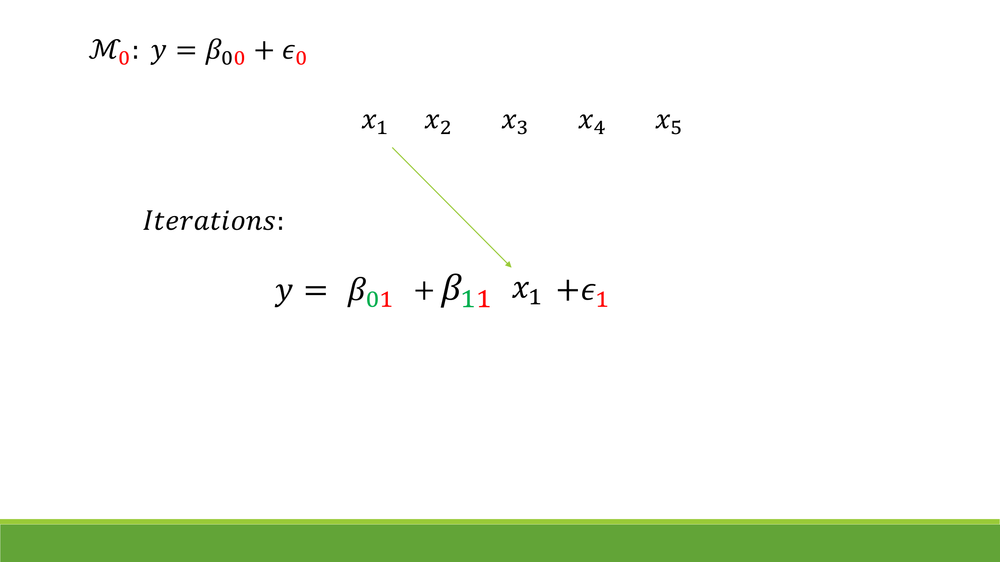
Forward stepwise — step 1
Forward stepwise selection: enumeration (2)
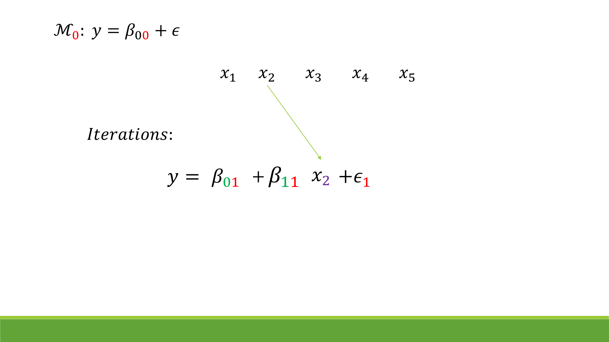
Forward stepwise — step 2
Forward stepwise selection: enumeration (3)
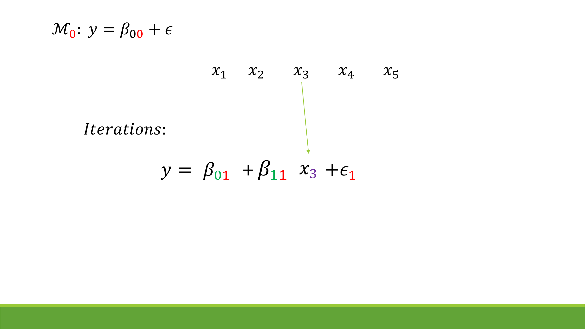
Forward stepwise — step 3
Forward stepwise selection: enumeration (4)
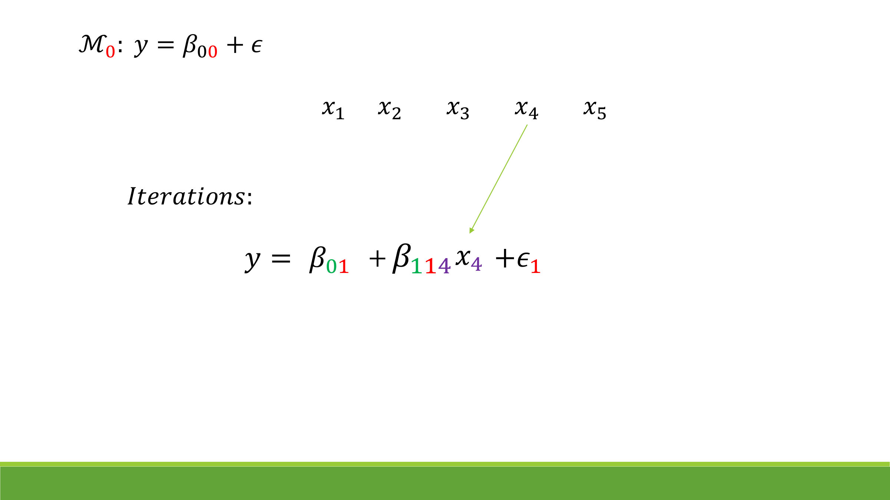
Forward stepwise — step 4
Forward stepwise selection: enumeration (5)
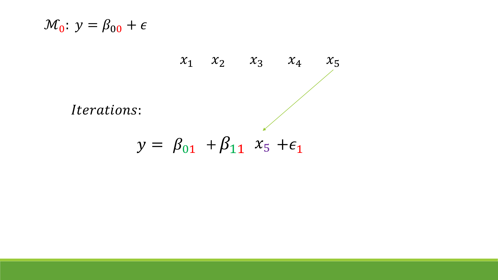
Forward stepwise — step 5
Forward stepwise selection: enumeration (6)
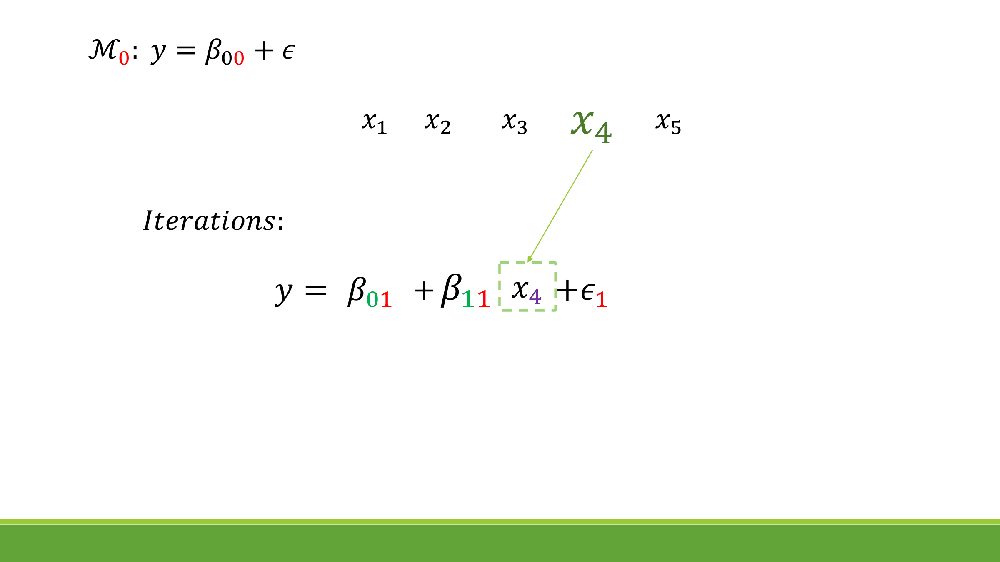
Forward stepwise — step 6
Forward stepwise selection: summary after iteration 1
Forward stepwise — \(M_1\) summary
Forward stepwise selection: enumeration (7)
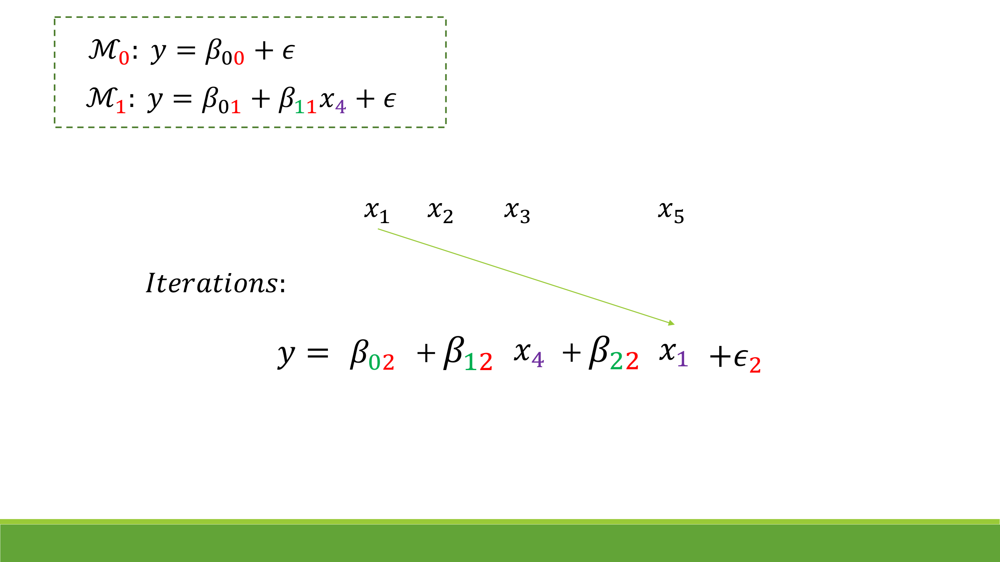
Forward stepwise — step 7
Forward stepwise selection: enumeration (8)
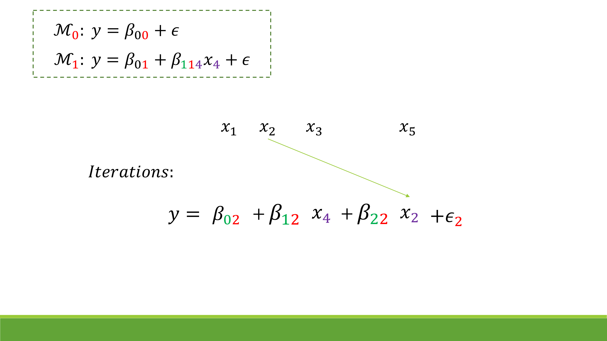
Forward stepwise — step 8
Forward stepwise selection: enumeration (9)
Forward stepwise — step 9
Forward stepwise selection: enumeration (10)
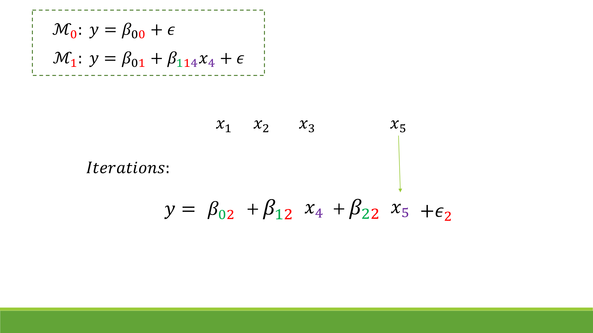
Forward stepwise — step 10
Forward stepwise selection: enumeration (11)
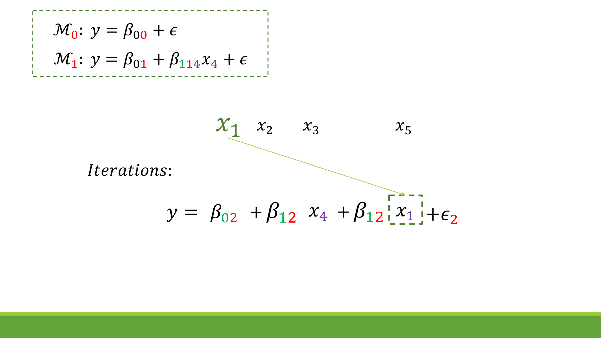
Forward stepwise — step 11
Forward stepwise selection: summary after iteration 2
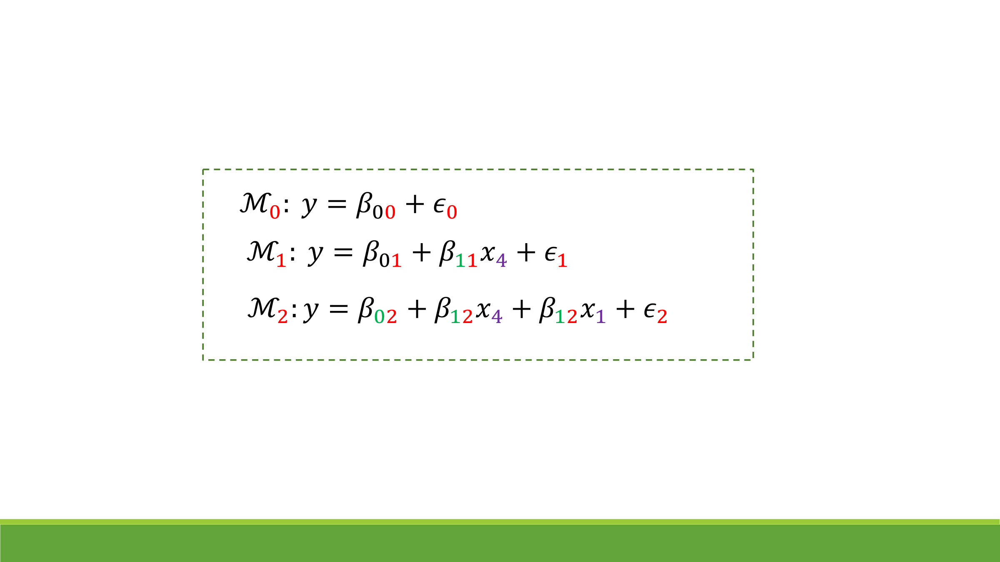
Forward stepwise — \(M_2\) summary
Forward stepwise selection: choosing the final model
- The forward path here: \(M_1\) adds \(x_4\); \(M_2\) adds \(x_1\); \(M_3\) adds \(x_5\); \(M_4\) adds \(x_3\); \(M_5\) adds \(x_2\).
- Then choose the best among \(M_k\) by CV, not RSS. Why not RSS?
- Can stop early if the remaining variables are not significant.
Forward Stepwise Selection
- FSS involves fitting one null model and \(p-k\) models for each iteration of \(k\): \(1 + \sum_{k=0}^{p-1}(p-k) = 1 + \frac{p(p+1)}{2}\) models. E.g., \(p = 20\) → 211 models (vs. 1,048,576 using best subset).
- Observe: \(M_1\) contains the predictor chosen for \(M_0\), \(M_2\) contains the predictors of \(M_1\), and so on — a nested sequence of models. Not the case in best subset selection, so forward stepwise may not always find the best possible model.
- Forward stepwise selection can be applied in high-dimensional scenarios where \(p > n\) (only the first \(n-1\) steps \(M_0,\dots,M_{n-1}\) can be built).
- Still not confined to OLS — can do, e.g., logit regression, just replace RSS by deviance (\(-2\log L\)).
Forward stepwise selection: illustration (1)
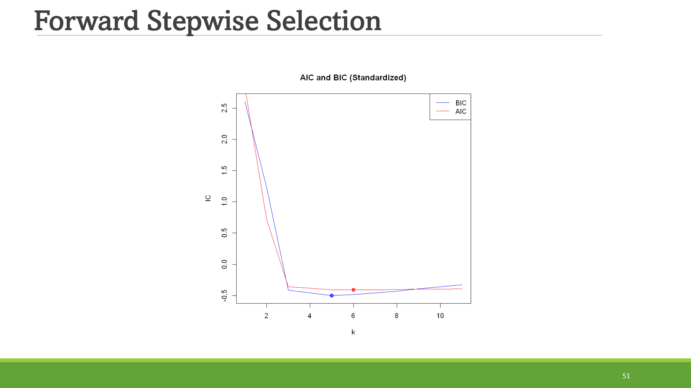
Forward stepwise illustration
Forward stepwise selection: illustration (2)
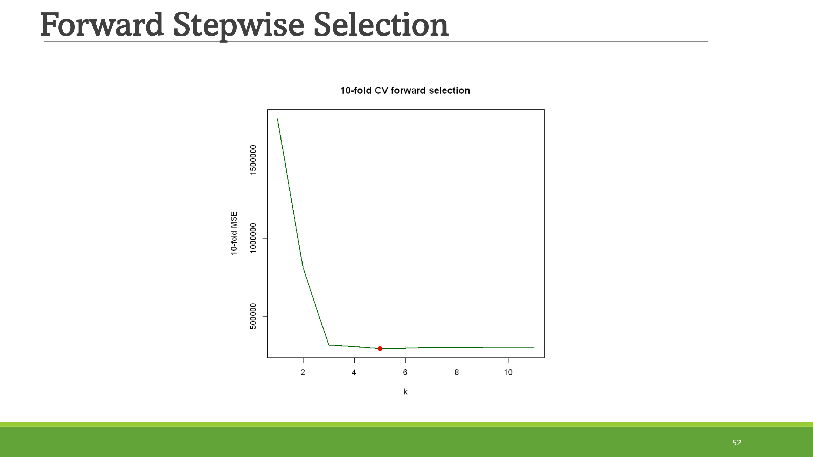
Forward stepwise illustration
Forward subset selection for ‘Credit’ (p = 8)
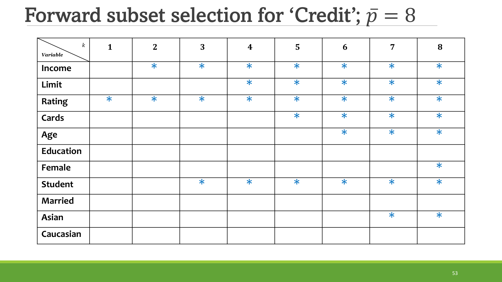
Forward stepwise — coefficient inclusion grid
Forward sel. optimal model for ‘Credit’
NB: in this example, alternative variance estimation for AIC/BIC does not change the selection.
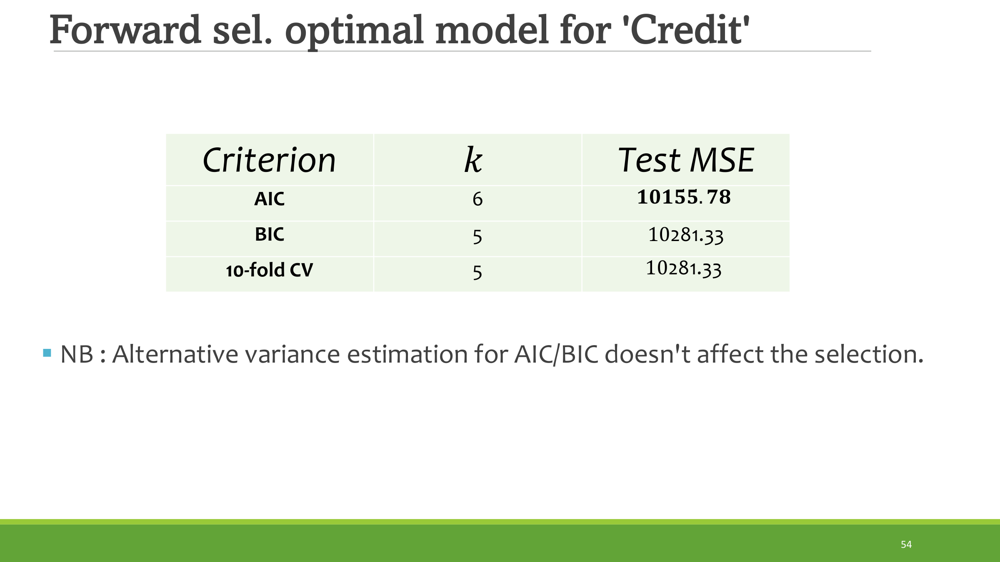
Forward stepwise — optimal model by criterion
Backward Stepwise Selection (General)
- Let \(M_p\) denote the full model, which contains all \(p\) predictors.
- For \(k = p, p-1, \dots, 1\):
- Consider all \(k\) models that contain all but one of the predictors in \(M_k\), for a total of \(k-1\) predictors.
- Choose the best among these \(k\) models, and call it \(M_{k-1}\). Here “best” is defined as having the smallest RSS or highest \(R^2\) (or maximum log likelihood or lowest deviance, depending on the estimation).
- Select a single best model from among \(M_0, \dots, M_p\) using cross-validated prediction error, \(C_p\), AIC, BIC, or adjusted \(R^2\).
Backward Stepwise Selection (OLS using t-stat)
- Let \(M_p\) denote the full model, which contains all \(p\) predictors.
- For \(k = p, p-1, \dots, 1\):
- Fit the model with \(k\) predictors.
- Identify the least useful predictor (smallest \(|t|\)), drop it, and call the resulting model \(M_{k-1}\).
- Select a single best model from among \(M_0, \dots, M_p\) using cross-validated prediction error, \(C_p\), AIC, BIC, or adjusted \(R^2\).
Backward Stepwise Selection
- Instead of fitting \(2^p\) models, the OLS t-statistic version needs only \(P+1\) fits (the \(t\)-stats come from the full-model fit); the general version needs \(1 + \frac{p(p+1)}{2}\) fits, as for logit regression — why the difference?
- Statistical cost: we constrain the search to reduce variance, but perhaps incur more bias.
- Can’t be used when \(p > n\) (the full model is not estimable).
- Still not confined to OLS — can do, e.g., logit regression.
Backward stepwise selection: illustration (1)
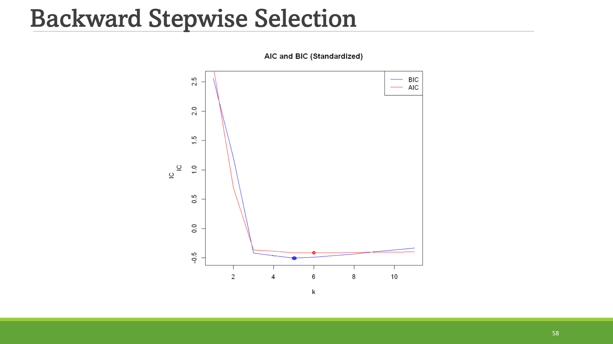
Backward stepwise illustration
Backward stepwise selection: illustration (2)
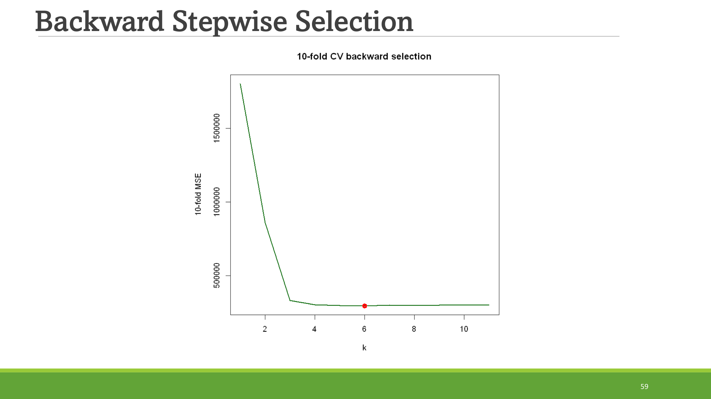
Backward stepwise illustration
Backward subset selection for ‘Credit’ (p = 8)
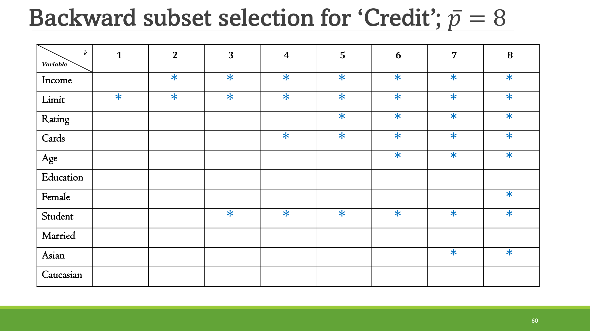
Backward stepwise — coefficient inclusion grid
Backward-selection optimal model for ‘Credit’
NB: in this example, alternative variance estimation for AIC/BIC does not change the selection.
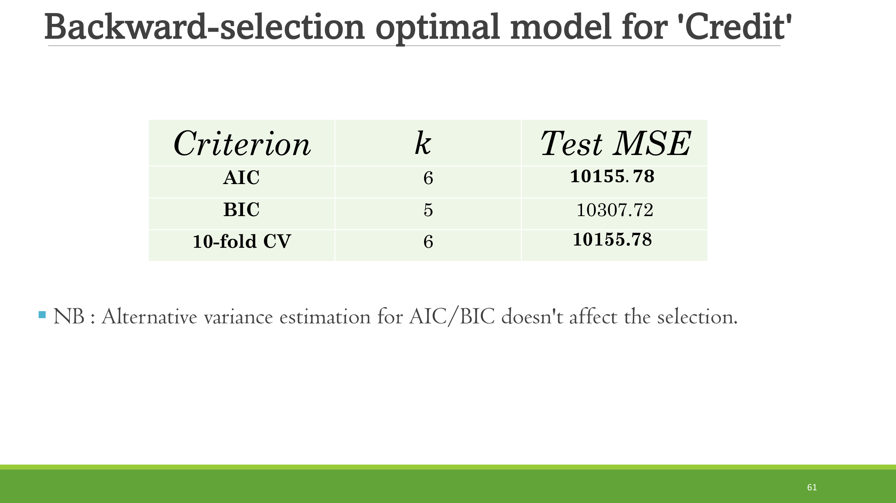
Backward stepwise — optimal model by criterion
High-dimensional setting (\(P \gg N\))
- Standard AIC and BIC are not well suited for selection — they will typically overfit.
- BIC could sometimes be fine if \(P\) is proportional to \(N\).
- Chen and Chen (2008) propose the extended BIC (EBIC), formally justified for the high-dimensional setting: \[EBIC_\gamma = -2\log L + k\log N + 2\gamma \log \binom{P}{k}, \qquad \gamma \in [0,1]\]
- With \(\log \binom{P}{k} \approx k\log P\), the per-parameter penalty becomes \(\log N + 2\gamma \log P\) — the slide shows the \(\gamma = 1\) case, i.e. replacing the penalty \(\log N\) with \(\log N + 2 \log P\).
- Wang (2012) shows that forward selection using the above BIC is consistent in ultra-high-dimensional settings under some assumptions (normal homoscedastic linear regression plus some regularity conditions).
Final comments
- Nice feature: end up with a single model that is easy to work with and discuss. Most likely not the true model.
- Very interpretable — but careful about claiming causality!
- Can do this type of selection with essentially any criterion function (e.g., log-likelihood for binary choice).
- Many flavors of selection methods — not all have theoretical justification. Need to figure out what works when.
- Standard approaches get very slow very fast. New techniques push the envelope quite a bit though.
- Stability w.r.t. the data sample could be an issue — a starkly different model may obtain if another sample is considered.